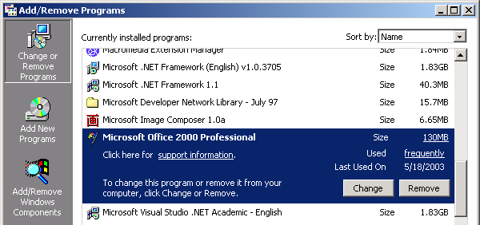
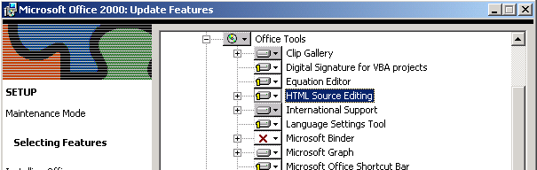
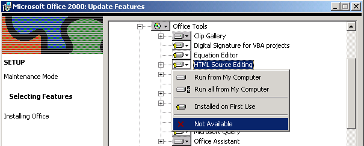

Resolving an Issue with Microsoft Office 2000 Professional
Microsoft Office 2000 Professional has a feature named HTML Source Editing. If this feature is installed with the attribute "Install on First Run", Microsoft Office 2000 Professional will interrupt the startup of Alpha Five Version 6. However, the problem is easily resolved.
Display the Windows Control Panel.
Select Add/Remove Programs.
Select "Microsoft Office 2000 Professional" and click Change.

Expand "Office Tools" and select "HTML Source Editing".

The left of "HTML Source Editing" should show a yellow numeral one. Click the icon to display the following menu.

Select either Not Available or Run from My Computer. In the latter case, you will need your Microsoft Office 2000 Professional installation disk.
When the change has been successfully applied, you can close the Update Features dialog box, the Add/Remove Programs dialog box, and the Control Panel.
See Also
This is a Microsoft Knowledgebase article explaining the cause of the problem.